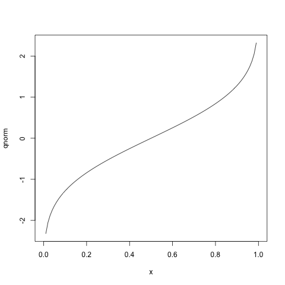
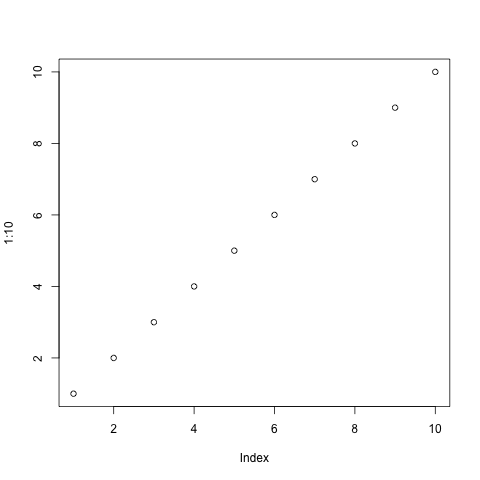

Creating a site with Pelican and org-mode
Mon 26 May 2014 — Filed under org-mode; tags: org-mode, pelican, elispTable of Contents
Never one to pass up the opportunity for yak-shaving, I thought I'd finally try to settle on a publishing platform for various notes and other content that I have scattered about on the web. The repository is on GitHub.
I much prefer to generate content in org-mode, but I couldn't manage to get org-publish to organize content in the way I wanted, or to be easily compiled in batch mode. When I learned that the Pelican static site generator could import html and saw another effort to use the two together, I thought I'd give it a shot.
org-mode integration
At a basic level, integration with org-mode is pretty simple: Pelican can import html content with page metadata provided in the header. Since I already have some tools for exporting org-mode from the command line (the project is named org-export), it was pretty easy to write a utility for this purpose.
org-export pelican -h
The utility renders the just body of the page (leaving all of the styling, etc to Pelican) and provides page metadata in the header, for example:
head ../content/getting-started.html
<html>
<head>
<title>Creating a site with Pelican and org-mode</title>
<meta name="authors" content="Noah Hoffman">
<meta name="date" content="2014-05-26">
<meta name="category" content="org-mode">
<meta name="tags" content="org-mode, pelican, elisp">
<meta name="save_as" content="getting-started.html">
<meta name="url" content="getting-started.html">
</head>
Specifying "save_as" and "url" was more convenient than trying to guess how Pelican would name the page.
The org-mode source for each post is compiled to html and placed in
pelican's content directory, where it is subsequently added to the
site using pelican content. I liked that compiling each org-mode
file to html is performed separately from rendering the content with
Pelican: the former step is relatively slow, and a build tool can
easily be used to render only pages that have changed (I use scons).
There were a couple of tricky bits, though.
Arranging content in subdirectories
First, I wanted to be able to create subdirectories containing data or images for specific posts (as opposed to lumping them all together in a single directory). Pelican doesn't seem to support this. So the SConstruct file manages the creation of subdirectories in Pelican's output directory and also copes page data and images there.
Then, when writing posts, you just need to remain aware of the
location of the data directory for a post relative to the org-mode
source; this relationship is preserved in the final output. Note that
the output of plotting operations should also be saved to the post's
subdirectory (eg, plot1.png).
Let's look at the organization of content and intermediate files for this post. Here's the working directory when the org-mode source is evaluated:
pwd
/Users/nhoffman/src/borborygmi/org-content
The org-mode source is here:
../org-content/getting-started.org ../org-content/getting-started: Perameles_gunni.jpg plot1.png plot2.png
Here is the intermediate html body for the post (note that these paths are relative to the org-mode source):
../content/getting-started.html
And the final output:
../output/getting-started.html ../output/getting-started: Perameles_gunni.jpg plot1.png plot2.png
An additional complication is that the files for the index and
individual posts are at the top level of the output directory, but
other pages (in categories, tags, etc) are in subdirectories. Rather
than muck around with modifying linking behavior in Pelican, I just
fixed things up in the latter files with lxml in the script
fix_urls.py.
Syntax highlighting
A lot of trial and error was required to export code blocks with colorized syntax highlighting, and I still can't say I fully understand why the final configuration seems to work when others I tried didn't. But here are a few of the bits of magic that were required.
Requiring the htmlize package alone seems to be sufficient to
produce colorized syntax highlighting when exporting interactively
from within emacs. But an identical configuration did not result in
colorized output when exporting in batch mode using org-export
pelican. I finally came across advice someplace to use the
color-theme package along with some custom themes. Turns out that
after installing color-theme along with color-theme-github, simply
adding
(require 'color-theme-github)
was enough to produce colorized output. Go figure.
Choosing a theme
There are plenty of choices over at the pelican-themes repository, and there were a number that seemed to work well (for the time being) without any modification at all.
For convenience, I just added the themes repository as a git submodule.
Here are some I liked at first glance:
- bootstrap
- bootlex
- dev-random2 (though I'd have to do some translation)
- tuxlite_tbs
- tuxlite_zf (although I prefer more contrast between text and code)
- zurb-F5-basic
I finally settled on tuxlite_tbs (thanks, chanux), and made a local version, which I've modified minimally thus far.
Hosting on github pages
Thanks to the magical ghp-import, hosting on GitHub pages is as easy as
ghp-import -p output
Examples
| here's | a | table |
|---|---|---|
| with | values | |
| in | some | cells |
Figure 1: Hey, a bandicoot!
{kind=link}
png('getting-started/plot1.png')
plot(qnorm)
invisible(dev.off())

plot(1:10)

for i in range(3):
print 'hello' + '!' * i
hello hello! hello!!
.header on
create table foo (bar, baz);
insert into foo values('a', 1);
insert into foo values('b', 2);
select * from foo;
| bar | baz |
| a | 1 |
| b | 2 |